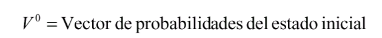
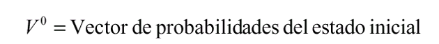

Introducción
Las cadenas de markov son modelos probabilísticos que se usan para predecir la evolución y el comportamiento a corto y a largo plazo de determinados sistemas.
Ejemplos: reparto del mercado entre marcas; dinámica de las averías de máquinas para decidir política de mantenimiento; evolución de una enfermedad,…
Definición
Una Cadena de Markov (CM) es:
- Un proceso estocástico
- Con un número finito de estados (M)
- Con probabilidades de transición estacionarias
- Que tiene la propiedad markoviana

Elementos de una Cadena de Markov
- Un conjunto finito de M estados, exhaustivos y mutuamente excluyentes (ejemplo: estados de la enfermedad)
- Ciclo de markov (“paso”): periodo de tiempo que sirve de base para examinar las transiciones entre estados (ejemplo, un mes)
- Probabilidades de transición entre estados, en un ciclo (matriz P)
- Distribución inicial del sistema entre los M estados posibles
Propiedad Markoviana
Un proceso estocástico tiene la propiedad markoviana si las probabilidades de transición en un paso sólo dependen del estado del sistema en el período anterior (memoria limitada)

 


Tipos de Modelos de Markov
- Procesos de Markov (Modelos semi-markovianos): Las probabilidades de transición entre estados pueden variar a medida que transcurren más ciclos
- Ejemplo: para modelizar la esperanza de vida, el riesgo de muerte aumenta con la edad
- Cadenas de Markov: Las probabilidades de transición se suponen constantes a lo largo del tiempo
Propiedad Markoviana
Ejemplos
| Comportamiento (sube/baja) del precio de las acciones hoy depende de lo ocurrido ayer |  |
| Problema de la ruina de un jugador de casino |  |
| Elección de marca: Con qué línea aérea volar a Madrid? |  |
Ejemplo 1: El reparto del mercado a largo plazo en un Oligopolio
Tres laboratorios farmacéuticos (A,B y C) que compiten en un principio activo (mismo conjunto homogéneo en la orden de precios de referencia). Hoy sus cuotas de mercado son 30%, 20% y 50% respectivamente.
Este es un ejemplo de cadena de Markov irreductible y ergódica. Todos los estados son recurrentes y están comunicados entre sí, formando una sola clase. Hay solución de estado estable (reparto del mercado a largo plazo, independiente de la situación inicial)